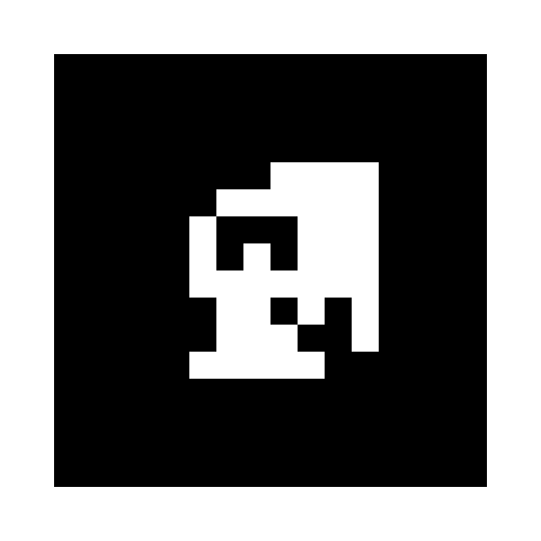

MONTAJE DEL RECORRIDO
De la pantalla
al edificio.
Este panel es para quienes organizan la búsqueda. Contiene los tres marcadores y las ubicaciones sugeridas. Elige lugares accesibles y autorizados en Sacré Coeur antes de invitar a Bruno, Maxi y Gonzalo.
- Imprime las tres páginas en blanco y negro, en tamaño real. Conserva el margen blanco y el borde negro completos. Evita plastificado brillante.
- Coloca la brújula en el punto de encuentro, la llave junto a una cartelera y el cristal cerca del acceso a un espacio de estudio. Son propuestas, no ubicaciones verificadas del edificio. Señala un único recorrido para evitar ambigüedades.
- Comparte la URL del juego e indica el punto de inicio a los jugadores. No necesitan esta guía durante la búsqueda.
- Prueba la URL por datos móviles, permite la cámara y escanea los tres papeles en orden. Cada símbolo debe permanecer visible un instante. Comprueba sonido, progreso 3/3 y tesoro final.
También puedes abrir cada PNG en otra pantalla para una prueba de escritorio. No escanees la pantalla del mismo celular con su propia cámara.
Qué hace el código
AR.js detecta patrones de 16 × 16 píxeles y A-Frame dibuja objetos 3D sobre ellos. markerFound inicia una confirmación de 650 ms; markerLost la cancela. La lógica valida el orden, evita duplicados y guarda el progreso localmente. Los modelos se construyen con geometrías y el sonido se sintetiza en el navegador.
Versiones fijadas: A-Frame 1.8.0 y AR.js 3.4.8. Scripts, patrones y calibración están alojados junto al juego.
Publicar también en GitHub Pages
El juego es estático. Copia el contenido de la carpeta dist a la raíz de un repositorio y activa Settings → Pages → Deploy from a branch → main / root. No requiere compilación ni claves. Usa siempre HTTPS para la cámara.
01 · La brújula
EL SECRETO DE SACRÉ COEUR

Abre el juego y enfoca el símbolo completo.
02 · La llave
EL SECRETO DE SACRÉ COEUR
Abre el juego y enfoca el símbolo completo.
03 · El cristal
EL SECRETO DE SACRÉ COEUR
Abre el juego y enfoca el símbolo completo.